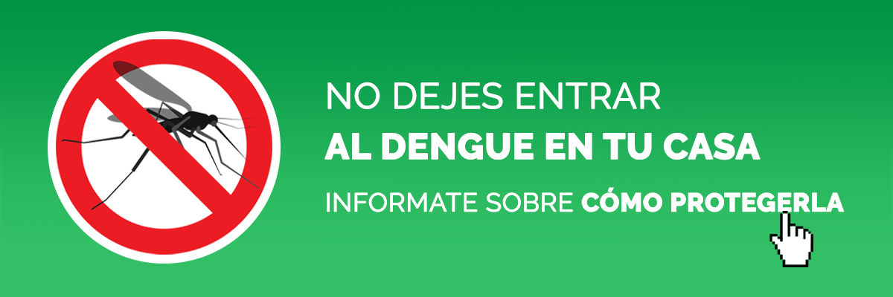

El dengue es una enfermedad causada por un virus y se transmite a las personas por la picadura del mosquito portador de la enfermedad. El dengue no se transmite de una persona a otra y actualmente no hay vacuna para combatirlo.
El dengue se transmite a través de la picadura de mosquitos infectados, principalmente por el mosquito Aedes aegypti. Estos mosquitos se infectan al picar a una persona que ya tiene el virus del dengue en su sistema durante el período de viremia (cuando el virus está presente en la sangre).
Una vez que el mosquito ha adquirido el virus, este se reproduce y se multiplica en su cuerpo durante un período de incubación de aproximadamente 8 a 10 días. Después de este período, el mosquito puede transmitir el virus a través de sus picaduras a personas sanas.
Es importante tener en cuenta que el dengue no se transmite directamente de una persona a otra, sino a través de la picadura de mosquitos infectados. Por lo tanto, para prevenir la propagación del dengue, es fundamental controlar y reducir la población de mosquitos, así como protegerse de las picaduras utilizando repelentes de insectos, vistiendo ropa protectora y eliminando los posibles criaderos de mosquitos en el entorno.
El dengue es transmitido principalmente por el mosquito Aedes aegypti, que es el vector principal de la enfermedad. Sin embargo, también se ha identificado al mosquito Aedes albopictus como un posible vector del dengue en algunas regiones.